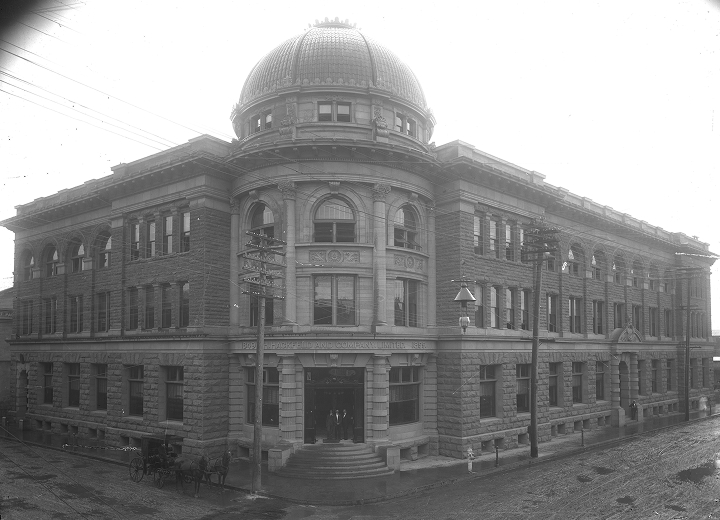
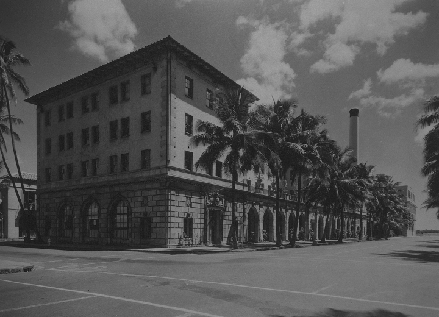

The Topa Towers trace their origins to the former H. Hackfeld & Co. building and the old government courthouse it acquired in 1874. Following World War I, the German-owned company rebranded as the patriotic American Factors, Ltd., later shortened to Amfac. By 1970, both buildings were demolished. To honor H. Hackfeld & Co.'s legacy, the original iron gate and coral blocks from the courthouse were preserved and placed in Walker Park as historical artifacts.
Photo credit: Hawaiʻi State Archives Digital Collection

Home to popular eateries, the Dillingham Transportation Center stands as a historic landmark on the edge of Downtown. Built in 1930, it was the first major commercial building in the area designed specifically for tenant use. During World War II, it also served as the FBI's field office, where agent Robert L. Shivers interviewed Japanese residents, which helped to prevent a mass internment like those seen on the mainland.
Photo credit: Hawaiʻi State Archives Digital Collection